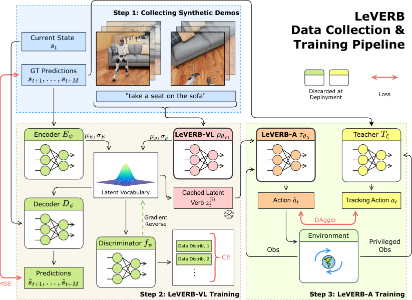
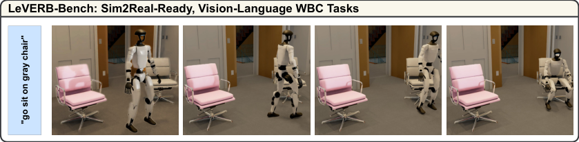
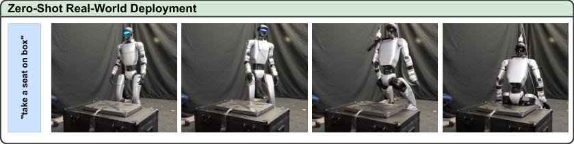
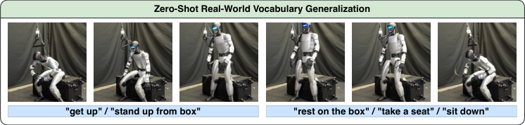
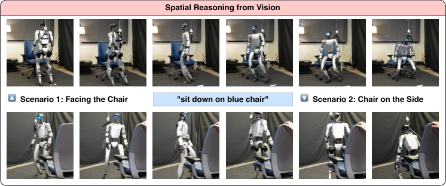

💡速记层 · 思想 / 逻辑 / 方法
默认读完就走的一层——只讲思想、逻辑、方法骨架；效果只作验证。要核对原文细节请看下方「深读层」。
- 人形机器人是高维非线性动力学系统，现有 WBC 要求高频（50 Hz+）底层反馈，而 VLA 推理慢且不懂动力学——两者频率和表示都不匹配。
- 已有方案用显式接口（速度/末端位姿/全身关键帧）：表达力有限，无法覆盖坐下、转身等复杂全身交互。
- 关键洞见：让 VLA 用 CVAE 从运动轨迹中自监督学一个结构化 latent space，latent verb 同时携带语义和运动信息。
- 低层 WBC 只需从这个固定 latent space 中采样条件运行，训练时无需渲染——解耦视觉渲染与动力学训练，大幅降低计算成本。
- 合成数据（运动捕捉 → 光线追踪渲染 → VLM 自动标注）完全消除了真实机器人数据采集瓶颈，且经域随机化后 zero-shot 迁移到真实 Unitree G1。
在 LeVERB-Bench 仿真闭环评测中整体成功率 58.5%，导航任务最高 80%，比朴素层级 VLA（NS ablation）高 7.8 倍；在真实 Unitree G1 上 zero-shot 部署成功（坐下、起立、视觉导航），完全用合成数据训练。
想看具体数字（点开）
- LeVERB 整体：58.5%；No Discriminator (ND)：33.0%；No LeVERB-VL (NVL)：25.5%；No Sampling (NS, 朴素 baseline)：7.5%。
- 视觉导航-正前方目标（VNF）Objective 场景：80%；加 Distractor：75%；加 Cluttered：50%。
- 语言-Only 任务（坐下）：LeVERB 100%，朴素 NS 仅 10%。
- System 2 参数量：102.56M（ViT-Base backbone）；System 1（学生）：2层 Transformer，隐层 128 维。
- 数据：5,996 条轨迹（3,696 视觉语言 + 2,300 语言-only），614 条唯一轨迹。
Track A（人形/移动操作 VLA）直接命中：这是首个将 VLA 与人形全身控制通过学习的 latent action space 连接的工作，latent verb 接口设计、CVAE 高层策略均可直接借鉴。Track B（足式/全身控制 sim-to-real RL）同样直接命中：PPO 跟踪教师 + DAgger 蒸馏学生 + 域随机化的三步 RL 流程是标准 sim-to-real whole-body control 配方，真实 G1 部署验证了其有效性。本文真正同时覆盖两条线，建议深读证据层。
◆核心观点 · 证据
每条 = 中文论点 + 📍页/节 + 🔤逐字原文(Ctrl-F 锚点) + 🀄译文 + 💡解读。
most existing systems assume an accurate low-level controller with hand-crafted action "vocabulary" such as end-effector pose or root velocity. This assumption confines prior work to quasi-static tasks and precludes the agile, whole-body behaviors required by humanoid whole-body control (WBC) tasks.
such interfaces restrict expressiveness and make it difficult to integrate complex whole-body motions and scene interactions. To fully unleash humanoid whole-body capabilities, we need (1) a learned "latent vocabulary" that is expressive enough to both cover whole-body motions and capture semantics encoded in the vision and language inputs

LeVERB-VL runs at 10 Hz, while LeVERB-A outputs joint position actions at 50 Hz. This decoupling of vision-language and dynamics-level action information enables separated training of the two systems, avoiding the heavy computations for graphical rendering required in end-to-end approaches.
A latent vector z serves as a one-way interface from LeVERB-VL to LeVERB-A, and is at the core of LeVERB-VL training. Intuitively, the latent space of z is a descriptive vocabulary that encodes complex whole-body motion objectives, and z is a latent sampled from this vocabulary.
we use a residual CVAE where the latent of a VLA prior with only vision-language inputs is combined with a privileged trajectory encoder to form a residual latent space. This encourages the VLA to focus on semantic reasoning while offloading motion-specific details to the trajectory encoder.
we introduce a discriminator inspired by [34], which takes the latent zt as input and predicts whether an actual image was present. We apply a Gradient Reversal Layer (GRL) during training, such that the adversarial learning encourages LeVERB-VL to produce modality-invariant latents, regardless of image availability.
First, we train vision-language-agnostic teacher policies capable of accurately tracking different categories of retargeted kinematics trajectories from LeVERB-Bench. The policy receives privileged proprioceptive observations and reference motions as commands, and outputs expert actions. We train teachers with Proximal Policy Optimization (PPO) and apply domain randomization for zero-shot sim-to-real transfer and early terminations to help training.
Importantly, we sample from the latent distribution rather than using the mean µρ. As LeVERB-VL captures a multimodal mapping between vision-language semantics and motions, using only the mean would impose a unimodal approximation, degrading policy performance.

With 154 trajectories, each randomized 100 times, We generate 17.1 hours of photorealistic motion rollouts.
the ND variant shows a significant decrease in performance in visual navigation tasks. This is likely due to the separation of the latent vocabulary distribution between the two categories of demos, vision-language ones and language-only ones, as a result of removing the discriminator designed to align data from different sources.
the NVL baseline achieves minimal success rates across all visual-language tasks. This shows that including the VLA planning capacity does help dramatically on visual-language input. In contrast, the performance text-only tasks is much better, even 100% in locomotion.



LeVERB-A System 1 getting sensor information from the joint encoder, IMU with Unitree SDK, and custom state estimator at 500 Hz; the inference happens in onboard CPU of the robot at 50 Hz with ONNX runtime, all the code is implemented in C++ to fulfill the real-time performance requirements.
We then open-loop replay the latent verbs in real world to LeVERB-A, executing the task successfully. This shows the dynamics-level sim-to-real readiness of LeVERB, enabling future real-world vision-in-the-loop deployment.
To our knowledge, no prior work has demonstrated vision-language-driven whole-body control on real humanoid robots using a hierarchical latent architecture—an important gap this work aims to fill.
⎘开源状态 · 实时检索结果
STEP 0 实时检查（2026-06-02）：检索 arXiv 页面、项目页面（404），搜索 GitHub。
- 代码
- 未公开 截至检索日期，未找到任何 GitHub 仓库或代码链接
- 权重
- 未公开 未发布预训练模型权重
- 数据/Benchmark
- 部分 LeVERB-Bench 流水线在论文中描述（MoCap 来源 AMASS/LAFAN），但未发布可下载数据集或评测工具包
- 项目页面
- 404
ember-lab-berkeley.github.io/LeVERB-Website/返回 404，尚未上线 - 论文 CC 协议
- CC BY-SA 4.0 arXiv 页面标注 CC BY-SA 4.0，仅限论文本身
论文发布于 2025-06（v3: 2025-09），属于较新 preprint，仍在审稿中。项目页面 404 表明尚未正式开源。鉴于第一作者所在 UC Berkeley Ember Lab 有开源传统，后续可能公开代码；建议关注 arXiv 更新和 ember-lab-berkeley.github.io。
arXiv:2506.13751v3 [cs.RO] 25 Sep 2025
⚖批判 · 评级
① 首个将 VLA 与人形全身控制通过学习的 latent 接口连接的工作，填补了文献空白，技术路线清晰可复现。② Track A + Track B 双线：CVAE latent verb 设计对 VLA 研究有参考价值，PPO教师→DAgger蒸馏的 sim-to-real 流程对全身控制研究有参考价值。③ 合成数据流水线+LeVERB-Bench 对后续工作的生态贡献有价值。④ 真实 Unitree G1 部署（哪怕是开环）是里程碑式的演示。
① 真实部署是"开环回放"：VL 模块在仿真中生成 latent verb 序列，真实机器人开环执行——不是真正的视觉闭环，泛化能力有限。② 任务范围有限：主要是导航和坐下，尚无复杂操作（搬运、双臂协调）。③ 数据规模小：154 条唯一轨迹，场景仅 4 种室内环境，泛化边界不清楚。④ 无开源：代码/权重/benchmark 均未发布，可复现性差。⑤ 基线设置薄弱：主要与自身消融版本比较，缺乏与 NaVILA、Humanoid-VLA、LangWBC 等同期方法的直接对比（作者以"no prior work establishes a fair comparison"为由跳过）。
评级：Important 首创性和技术贡献明确，但真实部署局限（开环）、基线单薄、无开源使实际影响打折扣——属于"重要探索"而非"可立即落地的突破"。